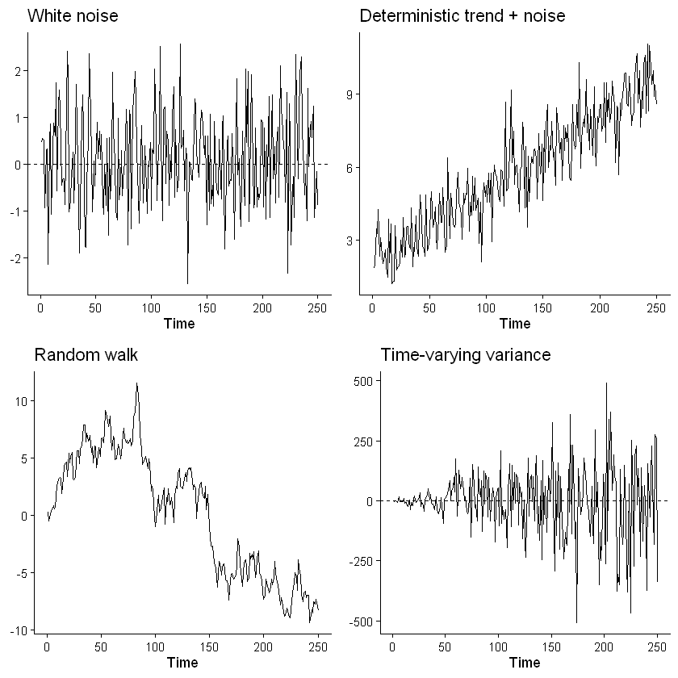
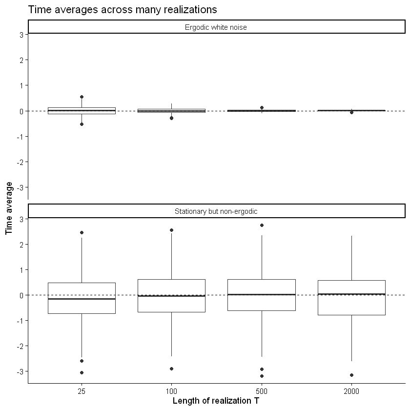
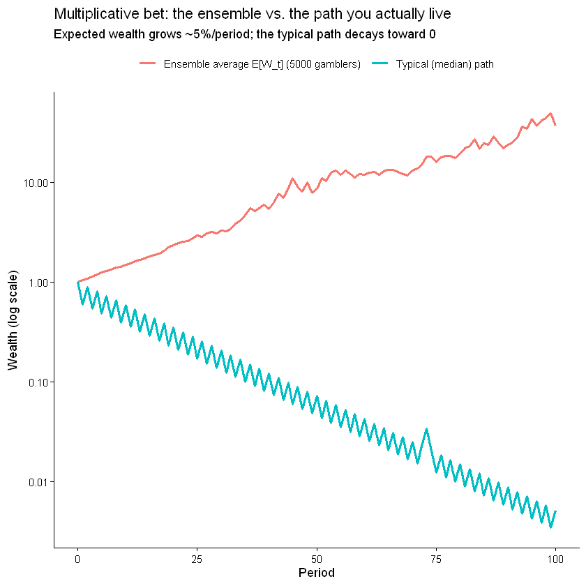
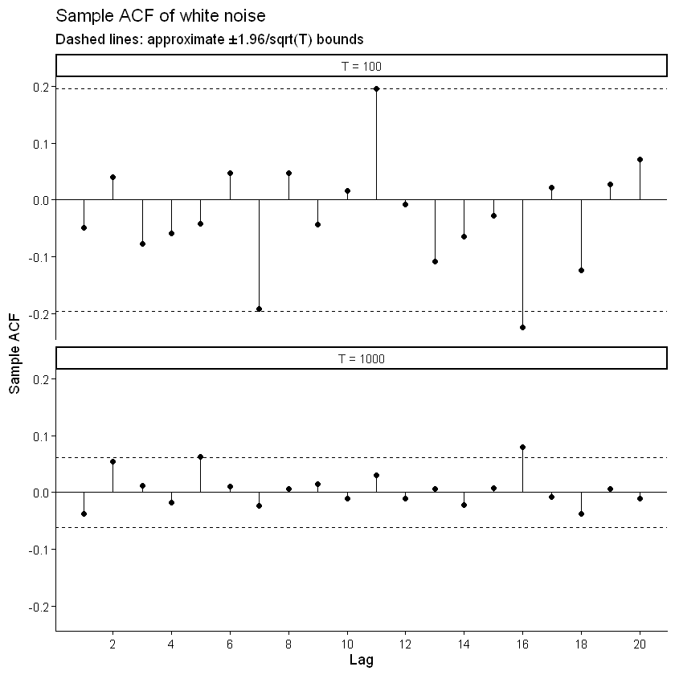
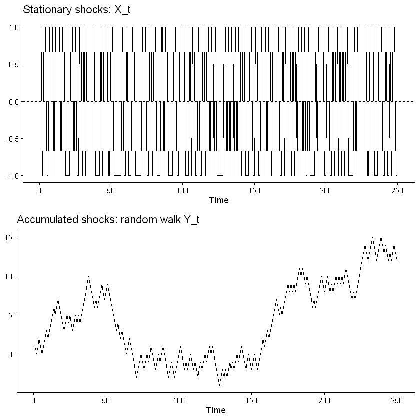
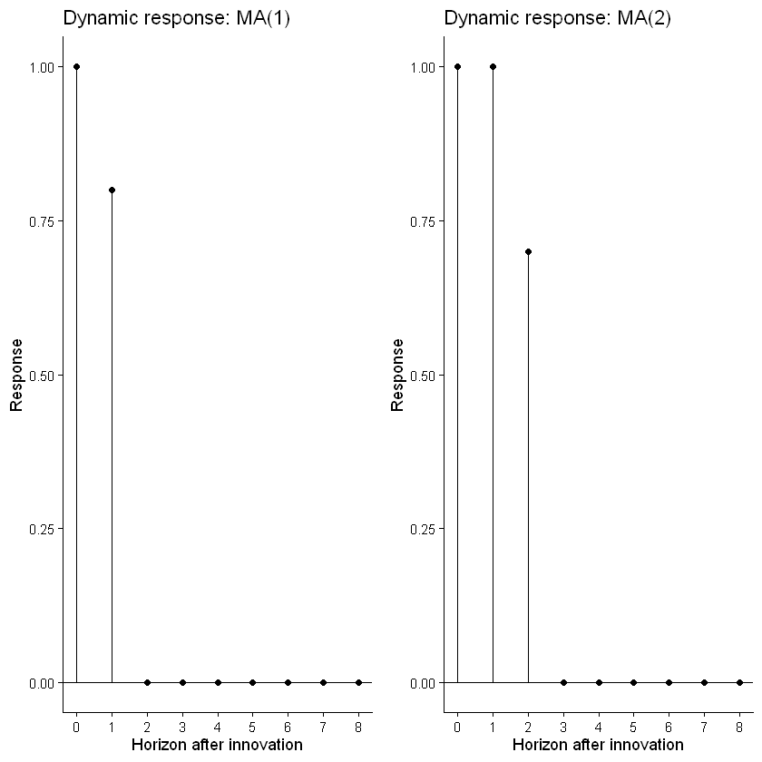

HS 821 · Lecture 5 · Topics in Time Series Econometrics
Sunil Paul
August 2026 · R 4.6
The statistics reviewed in the preceding lectures treated observations largely as a random sample. Time-series data are different: ordering matters, observations may be dependent, and in most applications we observe only one realization of an underlying stochastic process.
This lecture develops the probabilistic foundation needed for ARMA modelling and forecasting.
Learning objectives
distinguish a stochastic process from an observed realization;
interpret the mean, autocovariance, and autocorrelation functions;
distinguish stationarity from ergodicity (time average vs. ensemble average);
explain white noise and the role of innovations;
use the Wold representation and lag-operator notation;
derive the ACF of MA processes and explain invertibility.
From random samples to time series
A stochastic process is a collection of random variables indexed by time,
\[
\{Y_t:t\in\mathbb Z\}.
\]
Before observation, each \(Y_t\) is a random variable. Once the process is observed over \(t=1,\ldots,T\), we obtain one realization,
\[
y_1,y_2,\ldots,y_T.
\]
The distinction matters because a time series is not merely an unordered collection of observations. Its temporal ordering and dependence structure are part of the object being studied.
Think before proceeding
Suppose you randomly shuffle the observations in a cross-sectional dataset. Much of the statistical information is unchanged.
What would happen if you randomly shuffled a time series?
The marginal distribution might remain unchanged, but its temporal dependence—and therefore its time-series structure—could be destroyed.
Moments of a stochastic process
The mean function is
\[
\mu_t=E(Y_t).
\]
The covariance between observations \(h\) periods apart is
Thus the autocovariance sequence must be positive semidefinite.
Question: Is any symmetric sequence satisfying \(\rho_0=1\) and \(|\rho_h|\le1\) a valid ACF? No. The autocorrelations must jointly define a positive-semidefinite covariance structure.
Stationarity
Strict stationarity
A process \(\{Y_t\}\) is strictly stationary if shifting time does not change any finite-dimensional joint distribution. For any \(k\), time points \(t_1,\ldots,t_k\), and shift \(h\),
A process is covariance stationary (weakly or second-order stationary) if
\(E(Y_t)=\mu\) for all \(t\);
\(\operatorname{Var}(Y_t)=\gamma_0<\infty\) for all \(t\);
\(\operatorname{Cov}(Y_t,Y_{t-h})=\gamma_h\) depends only on the lag \(h\), not on calendar time \(t\).
If second moments exist, strict stationarity implies covariance stationarity. The converse is not true in general.
For a Gaussian process, however, the mean and covariance completely determine all finite-dimensional distributions. Hence covariance stationarity implies strict stationarity.
Predict before you simulate
Consider four processes:
White noise\[
Y_t=\varepsilon_t,\qquad \varepsilon_t\sim WN(0,\sigma^2).
\]
# ------------------------------------------------------------------# Setup: We will first create some functions to plot the graph later.# ------------------------------------------------------------------# Install packages if not installed# ------------------------------------------------------------------suppressPackageStartupMessages({library(ggplot2)library(gridExtra)})# Time-series line plot; optional dashed reference line at the mean.ts_plot <-function(x, mu =NULL) {stopifnot(is.numeric(x) ||is.ts(x)) time_idx <-if (is.ts(x)) as.numeric(time(x)) elseseq_along(x) df <-data.frame(time = time_idx, value =as.numeric(x)) p <-ggplot(df, aes(time, value)) +theme_classic() +geom_line() +labs(x ="Time", y =NULL)if (!is.null(mu)) p <- p +geom_hline(yintercept = mu, linetype ="dashed") p}# Theoretical ACF of an ARMA process, lags 1..L (lag 0 dropped).acf_plot <-function(ar =numeric(0), ma =numeric(0), L =16, title =NULL) { rho <-ARMAacf(ar = ar, ma = ma, lag.max = L)[-1] df <-data.frame(lag =seq_len(L), acf =as.numeric(rho))ggplot(df, aes(lag, acf)) +theme_classic() +geom_hline(yintercept =0) +geom_segment(aes(xend = lag, y =0, yend = acf), linewidth =1) +geom_point(size =2) +scale_x_continuous(breaks =seq(0, L, by =2)) +labs(x ="Lag", y ="ACF", title = title)}# Impulse response of an MA(q): psi = (1, theta_1, ..., theta_q, 0, ...).irf_ma <-function(ma =numeric(0), h =8, title =NULL) { psi <-c(1, ma, rep(0, max(0, h -length(ma))))[seq_len(h +1)] df <-data.frame(horizon =0:h, response = psi)ggplot(df, aes(horizon, response)) +theme_classic() +geom_hline(yintercept =0) +geom_segment(aes(xend = horizon, y =0, yend = response)) +geom_point() +scale_x_continuous(breaks =0:h) +labs(x ="Horizon after innovation", y ="Response", title = title)}# Running moment diagnostics used in the ergodicity simulations:# running mean, running second moment, and running lag-1 product.running_moments <-function(y) { Tn <-length(y) lagprod <- y[-1] * y[-Tn]data.frame(t =1:Tn,mean =cumsum(y) / (1:Tn),second_moment =cumsum(y^2) / (1:Tn),lag1_product =c(NA, cumsum(lagprod) / (1:(Tn -1))) )}
Show R code
# Simulate four processesset.seed(821)T <-250t <-1:Twn <-rnorm(T)trend <-2+0.03* t +rnorm(T)rw <-cumsum(rnorm(T))tvv <- t *rnorm(T)p1 <-ts_plot(wn, mu =0) +ggtitle("White noise")p2 <-ts_plot(trend) +ggtitle("Deterministic trend + noise")p3 <-ts_plot(rw) +ggtitle("Random walk")p4 <-ts_plot(tvv, mu =0) +ggtitle("Time-varying variance")grid.arrange(p1, p2, p3, p4, ncol =2)

Reading the graphs
White noise fluctuates around a constant mean with constant variance.
A deterministic trend violates the constant-mean condition.
A random walk has \[
\operatorname{Var}(Y_t)=t\sigma^2
\] when \(Y_0\) is fixed, so its variance changes with time.
If \(Y_t=t\varepsilon_t\), then \[
E(Y_t)=0,
\qquad
\operatorname{Var}(Y_t)=t^2\sigma^2,
\] so the process is nonstationary through its variance.
The graphs illustrate realizations. Stationarity is a property of the stochastic process, not a visual property of one particular observed path.
Stationarity is not enough: ergodicity
Stationarity is a statement about the rows of a stochastic process: at every date the probability law is the same. Ergodicity is a different, and equally important, statement — it connects two ways of averaging that need not agree.
Picture the process as a grid. Each column is one complete history the world could have produced (one realisation \(\omega\)); each row is a fixed date \(t\) seen across all those parallel histories.
Ensemble average — average down a row, across parallel histories at a fixed \(t\). This is the expectation \(E(Y_t)\).
Time average — average along one cloumn, over time within the single history we actually observe: \(\dfrac{1}{T}\sum_{t=1}^{T}Y_t\).
\[
\underbrace{E(Y_t)}_{\text{along a row: across histories}}
\qquad\text{vs.}\qquad
\underbrace{\frac{1}{T}\sum_{t=1}^{T}Y_t}_{\text{down a column: one history}}
\]
A stationary process is mean ergodic when these two coincide as the sample grows:
where \(\xrightarrow{p}\) is convergence in probability (stronger conditions give almost-sure convergence). The same idea extends to variances and autocovariances: ergodicity is exactly what lets a time average from one path stand in for an ensemble average.
Why this is important in time-series econometrics. We almost never get the grid — we get one row. There is one realized path of US GDP, one path of the S&P 500, one observed inflation series. Every time we estimate a mean, a variance, or an autocorrelation from that single path and treat it as a population quantity, we are assuming the process is ergodic. If it is not, collecting more of the same history does not help.
Two warnings the simulations will make concrete:
stationarity does not imply ergodicity — a stable law can still hide a permanent, history-specific component;
serial dependence does not imply non-ergodicity — strongly autocorrelated data (a stationary AR(1)) can still be ergodic.
A real-world picture: permanent versus transitory
The example simulated below,
\[
Y_t = A + \varepsilon_t,
\qquad A \text{ drawn once},\quad \varepsilon_t \text{ transitory},
\]
is the permanent–transitory decomposition that runs through applied economics.
Read \(Y_t\) as a household’s log income in year \(t\). The permanent component \(A\) — profession, human capital, region — is drawn once and carried for life; \(\varepsilon_t\) is a good or bad year. This is the structure behind Friedman’s permanent-income hypothesis and the modern income-dynamics literature.
Or read \(Y_t\) as a country’s growth: a permanent “type” \(A\) (institutions, geography) plus year-to-year shocks \(\varepsilon_t\).
Now follow one household (or country) for a long time. Its time-average income converges to its own permanent draw \(A\), not to the average across all households. Watching Argentina for two centuries reveals Argentina’s \(A\), not the world-average growth rate.
That is non-ergodicity: the permanent component never averages out within a single column, so one long history cannot recover the cross-sectional (ensemble) mean. Contrast this with a stationary AR(1), where a shock’s influence decays, \(\gamma_h=\phi^h\to0\), and a long enough path does recover the ensemble moments.
We track three time averages at once: the running mean, the running second moment, and the running lag-1 product. These are the sample analogues of the three ensemble quantities above.
Predict before running: as the realization becomes longer, what should each of the three running quantities approach?
Show R code
# Ergodic white noise: running mean, second moment, and lag-1 productset.seed(821)T <-5000y <-rnorm(T)d <-running_moments(y)p1 <-ggplot(d, aes(t, mean)) +geom_line() +geom_hline(yintercept =0, linetype ="dashed") +theme_classic() +labs(title ="Running mean", x ="T", y =expression(frac(1, T) *sum(Y[t])))p2 <-ggplot(d, aes(t, second_moment)) +geom_line() +geom_hline(yintercept =1, linetype ="dashed") +theme_classic() +labs(title ="Running second moment", x ="T", y =expression(frac(1, T) *sum(Y[t]^2)))p3 <-ggplot(d, aes(t, lag1_product)) +geom_line() +geom_hline(yintercept =0, linetype ="dashed") +theme_classic() +labs(title ="Running lag-1 product", x ="T",y =expression(frac(1, T -1) *sum(Y[t] * Y[t -1])))grid.arrange(p1, p2, p3, ncol =1)
Warning message:
"Removed 1 row containing missing values or values outside the scale range (`geom_line()`)."
rather than the ensemble values \(0\), \(2\), and \(1\). The three running diagnostics below therefore settle on realization-specific limits (dashed), not the ensemble values (dotted).
The difference is not simply whether observations are dependent, but whether the dependence is sufficiently persistent to prevent time averages from revealing ensemble moments.
Many realizations make the distinction visible
Generate many realizations of increasing length and compare their time averages.
For an ergodic process, time averages should become concentrated around the ensemble mean.
For \(Y_t=A+\varepsilon_t\), transitory noise averages out, but the realization-specific component \(A\) remains.
Predict what should happen before running the simulation.
Show R code
# Many realizations: does increasing T make the time average concentrate?set.seed(824)T_values <-c(25, 100, 500, 2000)R <-300results <-do.call( rbind,lapply(T_values, function(Ti) { wn_means <-replicate( R,mean(rnorm(Ti)) ) nonergodic_means <-replicate( R, { A_i <-rnorm(1)mean(A_i +rnorm(Ti)) } )rbind(data.frame(T =factor(Ti, levels = T_values),process ="Ergodic white noise",time_mean = wn_means ),data.frame(T =factor(Ti, levels = T_values),process ="Stationary but non-ergodic",time_mean = nonergodic_means ) ) }))ggplot(results, aes(x = T, y = time_mean)) +geom_boxplot() +geom_hline(yintercept =0, linetype ="dashed") +facet_wrap(~ process, ncol =1) +theme_classic() +labs(title ="Time averages across many realizations",x ="Length of realization T",y ="Time average" )

Interpretation
For white noise, the distribution of time averages collapses toward zero as \(T\) increases.
For \(Y_t=A+\varepsilon_t\), each realization instead converges toward its own draw of \(A\). The distribution of time averages therefore does not collapse to the ensemble mean.
Ergodicity is what allows a long history to substitute, in an appropriate sense, for repeated draws from the ensemble.
Why ergodicity changes decisions: a betting example
The cases above are additive and stationary. The most consequential real-world failures of ergodicity are often multiplicative, and they change what “a good bet” even means. This is the core of what is now called ergodicity economics (associated with Ole Peters).
Consider a repeated gamble on your wealth \(W_t\). Each period, independently,
so a typical path shrinks about 5% per period and \(W_t \to 0\) almost surely.
The expectation (across parallel worlds) and the growth actually experienced along one path point in opposite directions. Because a real investor lives one path, the time average — not the expectation — is the decision-relevant number. This is exactly why compounded (geometric) returns, “volatility drag,” and the Kelly criterion matter, and why judging a repeated financial gamble by its expected value alone is misleading.
Predict before running: as \(t\) grows, what happens to (i) the average wealth across many gamblers, and (ii) the wealth of the typical gambler?
Show R code
# Multiplicative bet: ensemble average rises while the typical path collapsesset.seed(826)n_paths <-5000Tn <-100# Each step multiplies wealth by 1.5 (gain 50%) or 0.6 (lose 40%), prob 1/2 each.multipliers <-matrix(sample(c(1.5, 0.6), n_paths * Tn, replace =TRUE),nrow = n_paths)wealth <-cbind(1, t(apply(multipliers, 1, cumprod))) # W_0 = 1 in the first columnt_idx <-0:Tnensemble_mean <-colMeans(wealth) # average across the 5000 gamblersmedian_path <-apply(wealth, 2, median) # the typical gambler# Theoretical referencesens_theory <-1.05^t_idxgeo_rate <-exp(0.5*log(1.5) +0.5*log(0.6)) # ~ 0.9487 per periodgeo_theory <- geo_rate^t_idxplot_df <-rbind(data.frame(t = t_idx, wealth = ensemble_mean, series ="Ensemble average E[W_t] (5000 gamblers)"),data.frame(t = t_idx, wealth = median_path, series ="Typical (median) path"))ggplot(plot_df, aes(t, wealth, colour = series)) +geom_line(linewidth =1) +scale_y_log10() +theme_classic() +theme(legend.position ="top", legend.title =element_blank()) +labs(title ="Multiplicative bet: the ensemble vs. the path you actually live",subtitle ="Expected wealth grows ~5%/period; the typical path decays toward 0",x ="Period", y ="Wealth (log scale)")cat(sprintf("Ensemble growth per period : %.3f (E[multiplier])\n", 1.05))cat(sprintf("Time-average growth/period : %.3f (geometric mean)\n", geo_rate))
Ensemble growth per period : 1.050 (E[multiplier])
Time-average growth/period : 0.949 (geometric mean)

What the picture shows
The two lines diverge on a log scale. The ensemble average climbs, matching \(E[W_t]=1.05^t\) — but it is propped up by a handful of extraordinarily lucky paths in which \(1.5\) came up far more often than \(0.6\). The typical (median) gambler tracks the geometric rate \(\approx 0.95\) per period and heads toward zero.
Ensemble average answers: “mean wealth across many parallel gamblers.” \(\to 1.05^t\).
Time/path view answers: “what happens to me if I keep playing.” \(\to (0.95)^t\).
Because these disagree, the process is non-ergodic: no single path’s time average converges to the ensemble mean. And since you only ever live one path, the ensemble expectation is the wrong basis for the decision.
This is the same lesson as \(Y_t=A+\varepsilon_t\) — one realization need not reveal the ensemble — now in a multiplicative, decision-relevant form.
These concepts overlap, but they are not equivalent.
Population ACF versus sample ACF
The population ACF is a property of the stochastic process. The sample ACF is an estimate computed from one finite realization.
For white noise,
\[
\rho_h=0
\qquad (h>0),
\]
but a finite sample will almost never produce sample autocorrelations that are exactly zero.
The simulation below compares realizations of length \(T=100\) and \(T=1000\).
Predict: which sample ACF should lie more tightly around zero?
Show R code
# Population ACF versus sample ACF for white noiseset.seed(825)sample_acf_df <-function(n, max_lag =20) { x <-rnorm(n) a <-acf(x, plot =FALSE, lag.max = max_lag)data.frame(lag =as.numeric(a$lag[-1]),acf =as.numeric(a$acf[-1]),n =paste0("T = ", n),bound =1.96/sqrt(n) )}acf_samples <-rbind(sample_acf_df(100),sample_acf_df(1000))bounds <-unique(acf_samples[c("n", "bound")])ggplot(acf_samples, aes(lag, acf)) +geom_hline(yintercept =0) +geom_segment(aes(xend = lag, y =0, yend = acf)) +geom_point() +geom_hline(data = bounds,aes(yintercept = bound),linetype ="dashed" ) +geom_hline(data = bounds,aes(yintercept =-bound),linetype ="dashed" ) +facet_wrap(~ n, ncol =1) +theme_classic() +scale_x_continuous(breaks =seq(0, 20, by =2)) +labs(title ="Sample ACF of white noise",subtitle ="Dashed lines: approximate ±1.96/sqrt(T) bounds",x ="Lag",y ="Sample ACF" )

Interpretation
The population ACF is zero at every positive lag, yet the sample ACF fluctuates around zero because it is computed from one realization.
As the sample grows, these sampling fluctuations typically become smaller. This is where the distinction between a stochastic process and an observed realization becomes operational.
A stationary process and a random walk from the same shocks
The shocks are stationary; their accumulation is not.
Show R code
# Same shocks, very different time-series propertiesset.seed(100)n <-250X <-sample(c(-1, 1), n, replace =TRUE)Y <-cumsum(X)p1 <-ts_plot(X, mu =0) +ggtitle("Stationary shocks: X_t")p2 <-ts_plot(Y) +ggtitle("Accumulated shocks: random walk Y_t")grid.arrange(p1, p2, ncol =1)

Differencing changes the process
For the random walk
\[
Y_t=Y_{t-1}+\varepsilon_t,
\]
the level is nonstationary because
\[
\operatorname{Var}(Y_t)=t\sigma^2.
\]
But
\[
\Delta Y_t
=
Y_t-Y_{t-1}
=
\varepsilon_t,
\]
which is stationary white noise.
This distinction between the properties of a level and its difference will become central when we study unit roots and integrated processes.
Linear representations of stationary time series
Wold decomposition
For a covariance-stationary, purely nondeterministic process,
Here \(\varepsilon_t\) is the innovation: the one-step-ahead linear projection error based on the past. Innovations are serially uncorrelated by construction; they need not be iid or Gaussian.
A general covariance-stationary process can also contain a deterministic component. Wold’s moving-average representation describes its purely nondeterministic component.
Why Wold matters
Wold provides a general dynamic representation:
today’s value can be written as the accumulated effects of current and past innovations.
Equivalently,
\[
Y_t=\widehat Y_{t|t-1}+\varepsilon_t,
\]
where \(\widehat Y_{t|t-1}\) is the best linear forecast from the past.
Important: a Wold innovation is a statistical innovation. It should not automatically be interpreted as a causal structural shock. It is also defined relative to linear prediction; a nonlinear forecasting model may exploit information that a linear projection does not.
This lecture concentrates on MA processes. Their finite-order stationarity is automatic when the innovations are white noise with finite variance. AR and ARMA properties follow in subsequent lectures.
and the theoretical ACF of an MA(\(q\)) cuts off after lag \(q\).
The reason is specific to linear dependence through the innovations: once \(h>q\), \(Y_t\) and \(Y_{t-h}\) share no common innovations, so their autocovariance is zero.
More generally, an MA(\(q\)) process is invertible when every root of
\[
1+\theta_1z+\cdots+\theta_qz^q=0
\]
lies outside the unit circle.
A coefficient larger than one does not, by itself, determine invertibility for an MA(2) or higher-order process. The condition applies to the roots of the complete lag polynomial.
Show R code
# Check invertibility of the two MA(2) examplesma_roots <-function(theta) { roots <-polyroot(c(1, theta))data.frame(root = roots,modulus =Mod(roots),outside_unit_circle =Mod(roots) >1 )}ma_roots(ma21)ma_roots(ma22)
the coefficient \(\psi_j\) measures the linear response at horizon \(j\) to a one-unit innovation today.
For an MA(\(q\)), the response becomes exactly zero after horizon \(q\). For an infinite-order MA representation, it may decay gradually.
These are responses to statistical innovations. A causal interpretation requires additional identification assumptions.
Predict first
For
\[
Y_t
=
\varepsilon_t
+0.8\varepsilon_{t-1},
\]
what is the response to a one-unit innovation:
immediately?
one period later?
two periods later?
Show R code
# Dynamic responses of MA processes (uses irf_ma defined in the setup cell)p1 <-irf_ma(0.8, h =8, title ="Dynamic response: MA(1)")p2 <-irf_ma(c(1.0, 0.7), h =8, title ="Dynamic response: MA(2)")grid.arrange(p1, p2, ncol =2)

Key takeaways
You should now be able to:
distinguish a stochastic process from one observed realization;
explain covariance stationarity, and ergodicity as the equality of time and ensemble averages;
give an economic or financial example where ergodicity fails (permanent income; a multiplicative bet);
interpret population autocovariances and autocorrelations;
distinguish white noise from independence;
explain Wold innovations and their role in linear forecasting;
derive the ACF of MA(1) and MA(\(q\)) processes;
explain why an MA(\(q\)) ACF cuts off after lag \(q\);
distinguish stationarity from invertibility and check the MA root condition.
Exercises
Exercise 1: What property fails?
For each process, determine whether it is covariance stationary and identify the condition that fails if it is not:
\[
Y_t=5+\varepsilon_t,
\]
\[
Y_t=5+0.1t+\varepsilon_t,
\]
\[
Y_t=t\varepsilon_t,
\]
\[
Y_t=Y_{t-1}+\varepsilon_t.
\]
Exercise 2: Stationarity versus ergodicity
Let
\[
Y_t=A,
\qquad
A\sim N(0,1).
\]
Why is this process stationary? Why does observing it for a very long time not reveal the ensemble mean?
Why is checking only \(|\rho_h|\le1\) insufficient? What additional property must an autocorrelation sequence satisfy?
Exercise 6: Invertibility
Show that \(\theta=0.5\) and \(\theta=2\), with appropriate innovation variances, can produce the same MA(1) autocovariance function.
Which representation is invertible, and what does invertibility mean economically/statistically for the innovation sequence?
Suggested reading
For the concepts developed in this lecture:
Hamilton, J. D. (1994), Time Series Analysis, Chapter 3.
Brockwell, P. J. and Davis, R. A., Introduction to Time Series and Forecasting, chapters on stationary processes and ARMA models.
Enders, W., Applied Econometric Time Series, sections introducing stationary stochastic processes and ARMA models.
Hyndman, R. J. and Athanasopoulos, G., Forecasting: Principles and Practice, chapters on time-series structure and ARIMA models, for a more intuitive computational treatment.
The next lecture builds naturally from this material to autoregressive processes, stationarity conditions, characteristic roots, persistence, and the contrasting ACF behaviour of AR and MA processes.